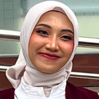

2002 — Sekarang
"Meraih Prestasi, Mengembangkan Potensi: Perjalanan Seorang Perempuan dalam Dunia Pendidikan dan Pengabdian ."
Lahir di Kabupaten Grobogan pada tahun 2002, ia tumbuh sebagai pribadi yang memiliki semangat untuk terus belajar dan mengembangkan kemampuan diri. Perjalanan pendidikannya menjadi bagian penting dalam membentuk karakter, wawasan, serta cita-citanya untuk meraih masa depan yang lebih baik.
Setelah menyelesaikan pendidikan dasar dan menengah pertama, ia melanjutkan pendidikan di SMA Negeri 1 Cepu. Masa-masa sekolah menengah atas menjadi salah satu tahapan penting dalam perjalanan akademiknya. Di lingkungan sekolah tersebut, ia semakin mengembangkan kemampuan diri dan mempersiapkan langkah untuk melanjutkan pendidikan ke jenjang yang lebih tinggi.
Semangat belajar yang dimilikinya kemudian mengantarkannya ke Sekolah Tinggi Keperawatan di Bojonegoro. Di perguruan tinggi inilah ia mulai mendalami dunia keperawatan secara lebih serius. Bidang keilmuan yang menuntut ketelitian, kedisiplinan, kepedulian, dan tanggung jawab tersebut dijalaninya dengan penuh kesungguhan.
Usaha dan ketekunannya selama menempuh pendidikan akhirnya membuahkan hasil yang membanggakan. Ia berhasil menyelesaikan pendidikan tinggi dengan predikat Cumlaude, sebuah pencapaian akademik yang mencerminkan kesungguhan, konsistensi, dan kerja kerasnya selama menjalani proses perkuliahan.
Setelah menyelesaikan pendidikan, ia mulai memasuki dunia profesional dengan bekerja di sebuah Poliklinik Gigi di Semarang. Lingkungan kerja tersebut menjadi tempat baginya untuk menerapkan ilmu yang telah diperoleh selama kuliah sekaligus memperluas pengalaman dalam dunia pelayanan kesehatan.
Kemampuan dan penguasaannya dalam bidang keilmuan keperawatan membuatnya dikenal sebagai pribadi yang memiliki kompetensi akademik dan profesional yang baik. Bahkan, kemampuannya tersebut pernah mendapatkan perhatian dari pihak kampus tempat ia menempuh pendidikan. Ia pernah memperoleh tawaran untuk bergabung sebagai dosen di almamaternya sendiri.
"Sebab, kesuksesan bukan hanya tentang seberapa tinggi prestasi yang berhasil diraih, tetapi juga tentang keberanian untuk terus bertumbuh, kesediaan untuk terus belajar, dan kemauan untuk menjadikan ilmu sebagai jalan pengabdian kepada sesama".
Tawaran tersebut tentu menjadi sebuah bentuk penghargaan sekaligus pengakuan atas kemampuan dan potensi akademik yang dimilikinya. Tidak semua lulusan mendapatkan kesempatan untuk kembali ke almamater sebagai tenaga pendidik. Namun, di balik kesempatan yang cukup menjanjikan tersebut, ia memiliki pertimbangan dan pandangan tersendiri mengenai perjalanan kariernya.
Alih-alih memilih kembali ke dunia akademik sebagai dosen, ia lebih tertarik untuk mencari pengalaman di tempat dan suasana yang berbeda. Baginya, kehidupan adalah proses belajar yang tidak pernah berhenti. Ada banyak hal yang masih ingin dijelajahi, pengalaman yang ingin diperoleh, serta kemampuan yang perlu terus dikembangkan.
Pilihan tersebut menunjukkan bahwa keberhasilan tidak selalu harus ditempuh melalui jalan yang sama. Setiap orang memiliki kesempatan untuk menentukan arah perjalanan hidupnya sesuai dengan tujuan, harapan, dan pertimbangan masing-masing. Keberanian untuk mencoba lingkungan baru juga merupakan bagian dari proses pendewasaan dan pengembangan diri.
Perjalanan hidupnya memberikan gambaran bahwa prestasi akademik bukanlah akhir dari sebuah perjuangan, melainkan salah satu pijakan untuk melangkah lebih jauh. Ilmu pengetahuan yang diperoleh harus terus dikembangkan, sementara pengalaman hidup menjadi pelengkap untuk membangun kematangan pribadi dan profesional.
Semoga semangat belajar, ketekunan, dan kemampuan yang telah dimilikinya senantiasa menjadi bekal dalam menapaki masa depan. Semoga setiap pilihan yang diambil membawanya menuju kesuksesan, keberkahan, dan kesempatan untuk memberikan manfaat yang lebih luas bagi masyarakat.
Thomas muda di depan rumah kayu, 1938
Hari pernikahan dengan istri tercinta, 1945
Mengajar William bermain catur, 1955
Reuni keluarga besar di Oak Creek, 1980